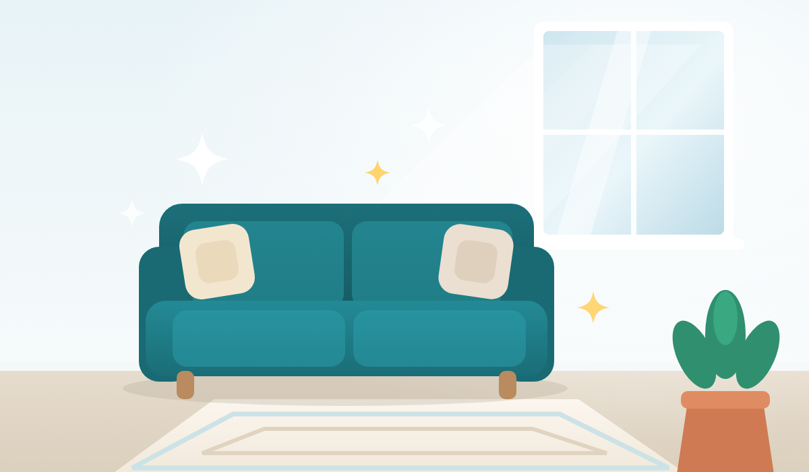

לחיצה אחת, ואתם בשיחה עם דוד
ניקוי שטיחים, ריפודים, ספות, פוליש והדברות. דוד, 27 שנות ניסיון.
לדבר עם דוד עכשיוהכפתור פותח את וואטסאפ עם ההודעה כבר כתובה. רק לשלוח.

ניקוי שטיחים, ריפודים, ספות, פוליש והדברות. דוד, 27 שנות ניסיון.
לדבר עם דוד עכשיוהכפתור פותח את וואטסאפ עם ההודעה כבר כתובה. רק לשלוח.